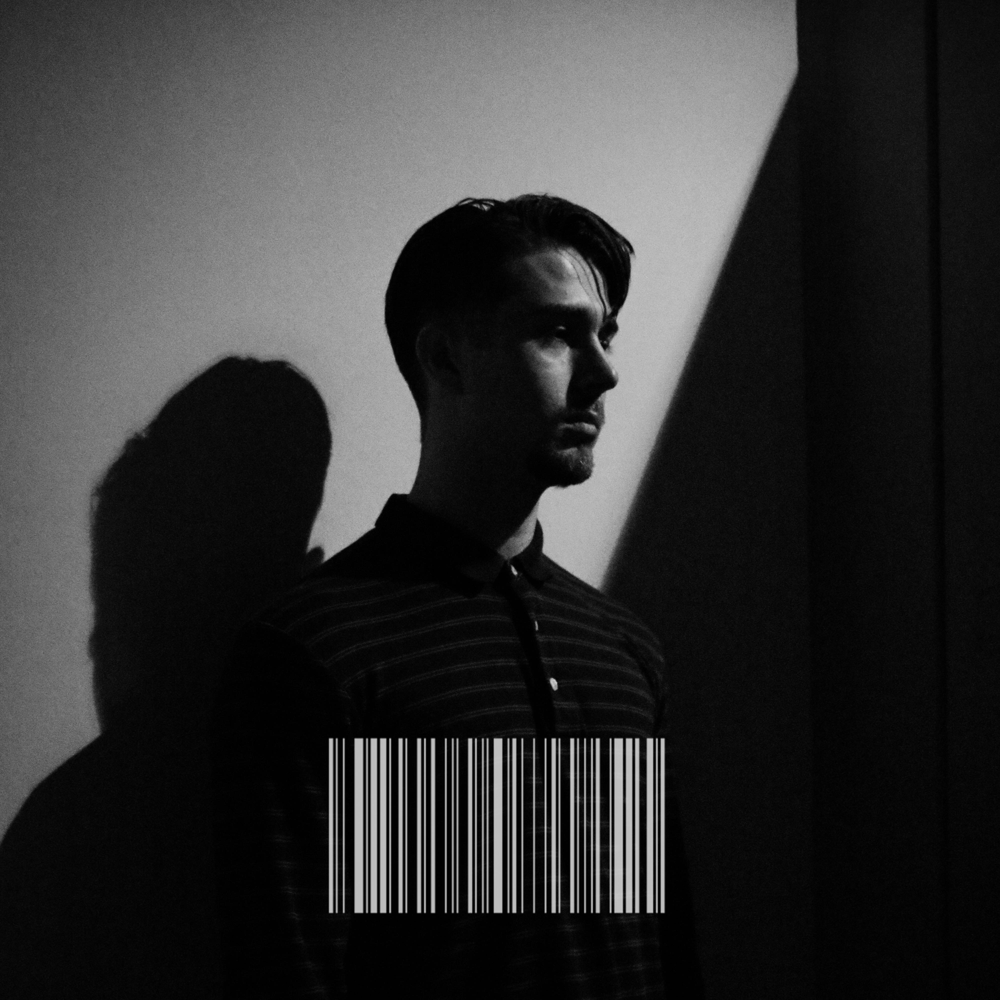

no.use
Barcode
A no.use EP
 Listen NowAbout
Liam Reilly, better known by his stage name "no.use", is a rap/alt-pop/emo artist from Santa Cruz, California. Born in 1998, the 23 year old rapper and producer grew up in a relatively sleepy town. Despite this, his sound is intense and hard-hitting, imploring you to mind the complexity of his lyrics. His message is cerebral and heartfelt, addressing the hardest parts of life, but this doesn’t come without a bold sense of humor and irony that fuels his music. He draws inspiration from the likes of Eminem, Blackbear, Mac Miller, and Eden, and you can hear their influence in his songs. However, his sound is always evolving and drawing inspiration from different sources as time goes on. No.use's music is deeply personal and he discusses topics such as mental health, addiction, and heartbreak in many of his songs, drawing inspiration from his own life experiences. However, no.use has something for everyone and his music demands your ears. He wants to share his journey in life, and invites you along for the ride. You can listen to his 2019 album "Barcode" on all streaming platforms.